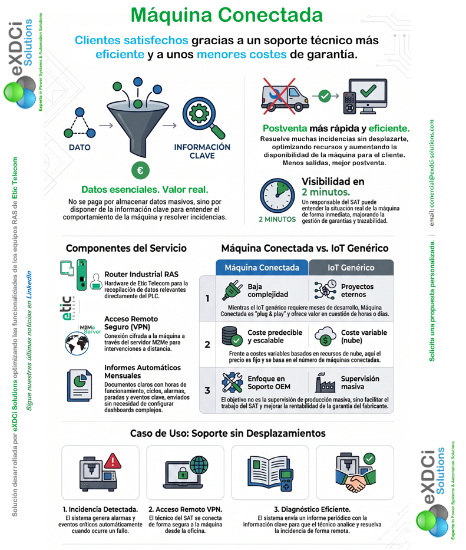
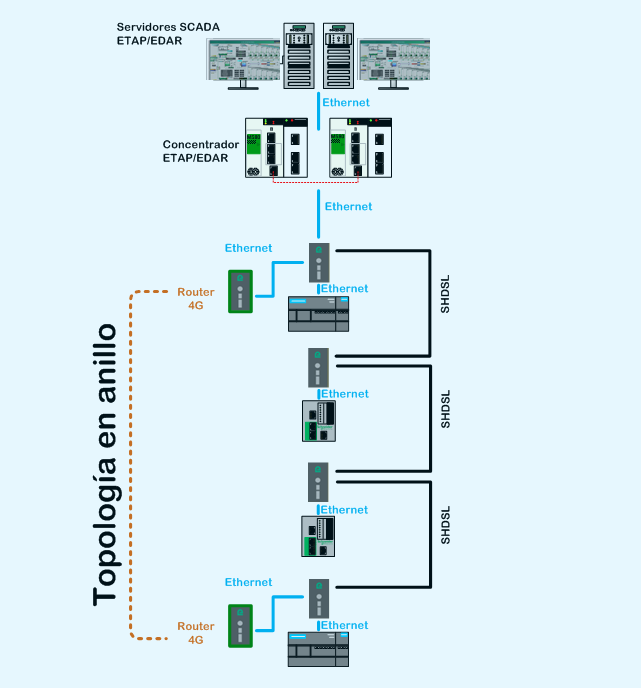
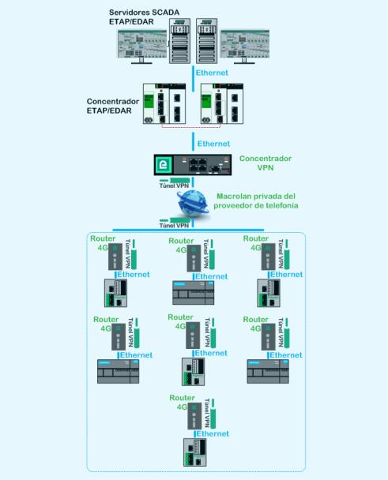
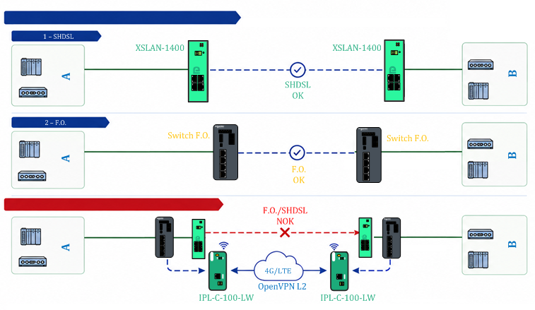

SOLUCIONES
Soluciones
En eXDCi desarrollamos soluciones específicas para resolver necesidades reales de comunicación y conectividad en sistemas de automatización y control industrial. Nuestras soluciones se basan en tecnología ETIC Telecom, combinando las prestaciones de sus equipos con nuestra experiencia en diseño, configuración e implementación de sistemas de comunicación.
Tres de nuestras soluciones (BeSmartOverWire, ESLynk y BackupLink) tienen una aplicación general en el ámbito industrial, aunque contamos con una amplia experiencia en su implementación en sistemas de mando y control de redes de abastecimiento y saneamiento. Esta experiencia nos permite adaptar la solución a las características particulares de instalaciones remotas, estaciones de bombeo y otras infraestructuras distribuidas.
A ellas se suma Máquina Conectada, una solución específicamente desarrollada para fabricantes de maquinaria, orientada a mejorar el mantenimiento, la postventa y el conocimiento sobre el funcionamiento de sus máquinas instaladas.
eXDCi Solutions
Nuestras soluciones sobre tecnología ETIC
Cada una resuelve un reto distinto: soporte postventa sin desplazamientos, modernización del cableado de cobre existente, interconexión inalámbrica segura entre estaciones, o continuidad de comunicaciones ante una rotura de cable o fibra.
Máquina Conectada
Clientes satisfechos gracias a un soporte técnico más eficiente y a unos menores costes de garantía.
Ver en detalle →BeSmartOverWire
Conéctate de forma responsable sobre una red Ethernet de cable de cobre inteligente.
Ver en detalle →Máquina Conectada
Solución desarrollada por eXDCi Solutions optimizando las funcionalidades de los equipos RAS de ETIC Telecom, pensada para fabricantes de maquinaria (OEM) y sus servicios de postventa.
Datos esenciales. Valor real.
No se paga por almacenar datos masivos, sino por disponer de la información clave para entender el comportamiento de la máquina y resolver incidencias.
- Postventa más rápida y eficiente: resuelve muchas incidencias sin desplazarte, optimizando recursos y aumentando la disponibilidad de la máquina para el cliente
- Visibilidad en 2 minutos: un responsable del SAT puede entender la situación real de la máquina de forma inmediata, mejorando la gestión de garantías y trazabilidad

Componentes del servicio
- Router Industrial RAS: hardware de ETIC Telecom para la recopilación de datos relevantes directamente del PLC
- Acceso remoto seguro (VPN): conexión cifrada a la máquina a través del servidor M2Me para intervenciones a distancia
- Posibilidad de generar informes mensuales personalizados con horas de funcionamiento, ciclos, alarmas, paradas y otros eventos clave, sin necesidad de configurar dashboards complejos. Servicio opcional que desarrollamos conjuntamente con cada cliente, adaptándolo a las características y necesidades específicas de su máquina o instalación.
Máquina Conectada frente al IoT genérico
- Baja complejidad, no proyectos eternos: mientras el IoT genérico requiere meses de desarrollo, Máquina Conectada es "plug & play" y ofrece valor en cuestión de horas o días
- Coste predecible y escalable: frente a costes variables basados en recursos de nube, aquí el precio es fijo y se basa en el número de máquinas conectadas
- Enfoque en soporte OEM, no en supervisión masiva: el objetivo es facilitar el trabajo del SAT y mejorar la rentabilidad de la garantía del fabricante
Caso de uso: soporte sin desplazamientos
- 1. Incidencia detectada: el sistema genera alarmas y eventos críticos automáticamente cuando ocurre un fallo
- 2. Acceso remoto VPN: el técnico del SAT se conecta de forma segura a la máquina desde la oficina
- 3. Diagnóstico eficiente: el sistema envía un informe periódico con la información clave para que el técnico analice y resuelva la incidencia de forma remota
Modelo de suscripción
La solución se estructura en tres conceptos, adaptados a las necesidades y al volumen de máquinas de cada fabricante:
- Configuración y estudio inicial: definición de las variables, eventos, cálculos e información relevante para cada tipo de máquina
- Servicio anual: acceso y disponibilidad del servicio, soporte, mantenimiento y actualizaciones continuas de la solución
- Máquinas conectadas: cuota anual por máquina, con un modelo progresivo que permite reducir el coste por unidad a medida que aumenta el número de máquinas conectadas
Warranty Essentials
Las máquinas nuevas equipadas con un router ETIC RAS pueden beneficiarse de un año de Máquina Conectada incluido, como parte de la propuesta Warranty Essentials.
Cada fabricante tiene unas necesidades diferentes. Por eso, adaptamos la configuración, el servicio y las condiciones económicas al número de máquinas, el tipo de información a obtener y el nivel de soporte requerido.
Solicita una propuesta personalizada para tu empresa.
BeSmartOverWire
Modernización sostenible de sistemas de telemando: convierte el cable de cobre de comunicaciones que ya tienes instalado —incluso desde hace más de 20 años— en una red Ethernet de alta disponibilidad, sin obra civil ni sustituirlo por fibra óptica.
Retos habituales en sistemas de telemando
- Instalaciones de cable de cobre que penalizan el ancho de banda
- Limitaciones para desplegar redes Ethernet en estaciones remotas
- Falta de acceso a los datos necesarios para optimizar los procesos
- Costes, complejidad e impacto ambiental de sustituir el cobre por fibra óptica
Cómo funciona
Reutiliza los cables de cobre de comunicación de par trenzado de hasta 1 mm de diámetro ya instalados, incluso desde hace más de 20 años.
Sobre esos cables, nuestros switches con tecnología SHDSL establecen una comunicación Ethernet entre dos puntos separados por una distancia de hasta 13 km y un ancho de banda de hasta 15 Mbps.
Mejora de la disponibilidad de la red al implementar una topología en anillo con routers 4G y bypass integrado, que conmuta automáticamente en caso de fallo de alimentación eléctrica o de cable.
Compatible con cualquier marca de fabricante de PLC con comunicación Ethernet.

Ventajas clave para tu negocio
- Ahorro significativo: aprovecha el cableado ya instalado y olvídate de inversiones costosas en fibra óptica
- Disponibilidad asegurada: ante un fallo en el cableado, el anillo RSTP conmuta automáticamente a una red 4G
- Optimización operativa: reduce los tiempos de refresco de datos de minutos a segundos
- Sostenibilidad económica: en 2025 y 2026 han sido financiados por el PERTE de digitalización del ciclo del agua
- Garantías de funcionamiento: soporte técnico especialista y servicio de asistencia remoto continuo
Nuestra experiencia nos avala
- Consorcio de Aguas de Bilbao Bizkaia: modernización de 60 estaciones remotas de bombeo, depósitos y aliviaderos desde 2014
- Aguas del Añarbe (San Sebastián): modernización de 40 estaciones remotas desde 2017
- Gipuzkoako Urak (Guipúzcoa): modernización de más de 80 estaciones remotas desde 2018
- Mancomunidad de Valdizarbe (Navarra): modernización de 18 estaciones remotas en 2023
ESLynk
Modernización inalámbrica segura del telemando: interconecta estaciones sin comunicación entre sí, o que aún dependen de radios analógicas, con una red Ethernet asegurada por VPN.
Retos habituales en sistemas de telemando
- Instalaciones con radios analógicas que penalizan el ancho de banda
- Limitaciones para desplegar redes Ethernet en estaciones remotas
- Falta de acceso a los datos necesarios para optimizar los procesos
- Falta de comunicación entre estaciones
- Falta de repuestos para los radio módems
Cómo funciona
La solución se basa en routers 4G industriales (IPL) de ETIC Telecom, que establecen una conexión VPN segura y cifrada contra un servidor VPN propio (SIG). La solución integral de ETIC Telecom simplifica la gestión de certificados VPN.
Todas las tarjetas SIM pertenecen a un APN privado y sus direcciones IP son privadas, cumpliendo las recomendaciones de ciberseguridad en estaciones críticas.
El concentrador de VPNs (SIG) permite la conexión tanto por Ethernet como por 4G, de forma que se puede implementar redundancia de comunicaciones en la estación central (canal principal y de respaldo).
Compatible con cualquier marca de fabricante de PLC con comunicación Ethernet.

Ventajas clave para tu negocio
- Ahorro significativo si se sustituyen las comunicaciones de radio analógica por radio digital
- Disponibilidad ampliada: el concentrador dispone de Ethernet y 4G, que conmutan automáticamente ante un fallo
- Optimización operativa: reduce los tiempos de refresco de datos de minutos a segundos
- Envío de email/SMS: los routers incorporan un servidor ModbusTCP que permite al PLC o al SCADA enviar correos o SMS
- Proyectos desarrollados en 2025 y 2026 han sido financiados por el PERTE de digitalización del ciclo del agua
Nuestra experiencia nos avala
- Aguas del Añarbe (San Sebastián): modernización de 53 estaciones remotas desde 2020, operador Movistar
- Gipuzkoako Urak (Guipúzcoa): modernización de más de 60 estaciones remotas desde 2020, operadores Vodafone y Euskaltel
- Mancomunidad de Valdizarbe (Navarra): modernización de 23 estaciones remotas en 2024, operador Movistar
Kit eXDCi BackupLink
En una instalación industrial, la rotura de un cable de comunicaciones o de una fibra óptica puede dejar temporalmente sin comunicación dos zonas de la instalación. La reparación del enlace físico puede requerir horas o incluso días, afectando durante ese tiempo a la supervisión, el diagnóstico y la operación remota de los equipos. El kit eXDCi BackupLink proporciona una solución de continuidad temporal: cuando falla el enlace principal, se despliegan dos routers IPL-C-100-LW de ETIC Telecom, uno en cada extremo, que establecen un túnel VPN sobre red móvil 4G/LTE, manteniendo la comunicación industrial de forma transparente y sin modificar la configuración de los equipos de la red.
Concepto clave
La comunicación se mantiene operativa mientras se realiza la reparación del enlace físico. Una vez reparado, se desconecta el backup y se restablece la comunicación por el enlace principal.
Disponer de un kit eXDCi BackupLink en sus instalaciones permite recuperar rápidamente las comunicaciones ante una rotura del enlace principal. Los equipos son preconfigurados por eXDCi Solutions con una configuración universal, por lo que el kit puede desplegarse directamente en los dos extremos afectados sin necesidad de realizar una configuración específica en campo.

Cómo funciona
En funcionamiento normal, la comunicación industrial entre las dos redes locales se realiza por el enlace principal entre switches, mediante extensores SHDSL (XSLAN-1400) o un enlace de fibra óptica.
Si se produce una rotura del cable o la fibra, se desconecta físicamente el enlace averiado y se conectan los dos routers IPL-C-100-LW que se suministran en el kit, uno en cada extremo, que establecen un túnel seguro VPN a través de la red móvil 4G/LTE.
La comunicación entre las dos redes locales continúa utilizando la misma red Ethernet, sin necesidad de modificar la configuración de los equipos ni las direcciones IP.
Características de la solución
- Comunicación transparente en capa 2 (misma LAN/VLAN)
- Sin cambios de IP en los equipos
- Conmutación manual: solo un camino de comunicación activo (cable/FO o túnel VPN)
- Solución preconfigurada por eXDCi Solutions, por lo que es una solución rápida de desplegar y sencilla de operar
- Permite mantener la comunicación industrial durante el tiempo necesario para reparar el enlace físico
- El kit puede incluir las tarjetas SIM EticSIM PRO de Etic Telecom, que es nuestra opción recomendada en el caso de que los clientes no utilicen de manera habitual tarjetas SIM para sus comunicaciones 4G/LTE
- El consumo de datos durante el funcionamiento del backup puede ser elevado, ya que el túnel de capa 2 transportará el tráfico unicast destinado a los equipos del extremo remoto, además del tráfico broadcast y multicast que se propague por la red.
Por qué recomendamos la conectividad profesional de EticSIM PRO
Nuestra recomendación es utilizar la solución EticSIM PRO incluida en los routers IPL-C-100-LW: ofrece conectividad multioperador 4G desde cualquier ubicación y datos profesionales con QoS garantizado, para asegurar al máximo el funcionamiento del sistema.
Etic Telecom ofrece EticSIM PRO con Pro Data para sus routers 4G, válida tanto para equipos nuevos como ya instalados. Es una solución B2B con QoS garantizada, donde la velocidad depende solo de la calidad de la señal, incluso en entornos con alta concurrencia de usuarios. Características:
- Cumplimiento normativo europeo
- Rendimiento estable
- Diseñada para aplicaciones profesionales críticas
- Multioperador en toda Europa. Por ejemplo, en España trabaja con Vodafone, Movistar, Orange y Xfera
De qué se compone el kit BackupLink
- 2 routers 4G IPL-C-100-LW, alimentación a 24 Vdc y montaje en carril DIN
- 2 antenas 4G ANT320 magnéticas con cable de 3 metros para fácil colocación
- 1 configuración realizada por eXDCi de los routers para un funcionamiento universal, adecuada a cada instalación en función de la subred utilizada
- Opcionalmente, se pueden entregar los routers con tarjetas EticSIM PRO de 360 GB, válidas por 36 meses
¿Quieres implementar alguna de estas soluciones en tu planta?
Cuéntanos tu caso y te proponemos la solución más adecuada.